|
WOW, your doing really well you managed to add something all by yourself, hopefully it wasn't too hard. This time we need to add the top bar in which is a little bit different so lets go through it together, just like you did before add a new pole and call it Top Pole, add the red material (index 2) dont add the rotation though. |
||
| 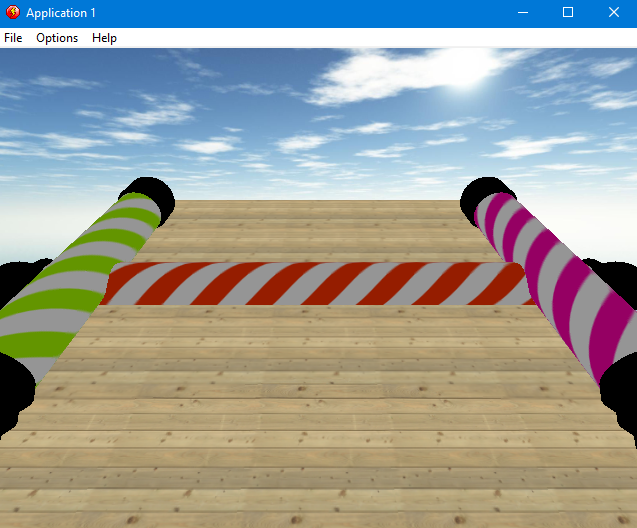 | ||
| To move it before we moved it along the X axis (left or right), however now we need to move it forwards which is the Z axis, so set its Position Z to 200 and like before the Position Y is still 20 | ||
| 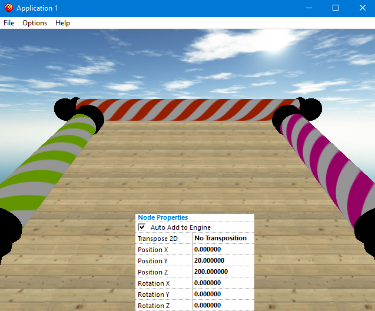 | ||
| Much better, now for the rotation, before we rotated on Z Axis but now due to it being rotated we need to rotate it on the X axis instead, so set the Always Rotation X to XRotation( "Top Pole" ) + 1 | ||
| 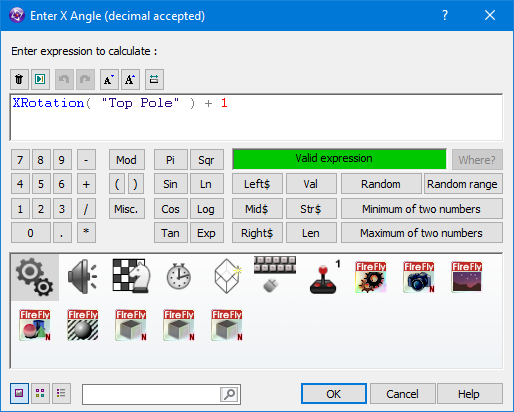 | ||
| Ok thats the rotating poles in and rotating properly, but you may have noticed big black bits on the ends and i expect your thinking you need to make a material and turn off lighting like before ? actually - lets me do that so you can see why its no good this time. | ||
| 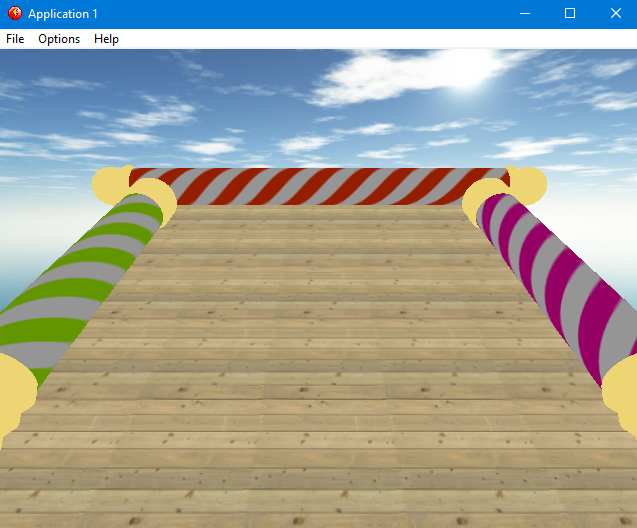 | ||
| Now i think you will agree although the ends do look sort of goldish, its not a very convincing look, especially when you compare it to. | ||
| 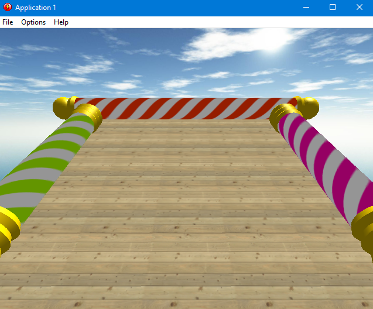 | ||
| Much better, so lets get yours looking like that, the first thing we need is an actual light source, add new object Firefly Node - Light, change the light type to Directional | ||
| 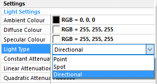 | ||
| We are going to try and mimic the sun that you can see in the clouds, so we need to rotate the angle of light down and to the left, so set the Rotation X to 40 and Rotation Y to -150. | ||
| 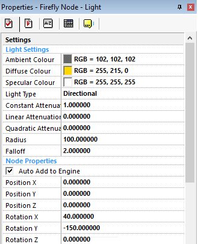 | ||
| We need dark areas to get a global light, so set the Ambient Light to Grey, The Diffuse areas to Golden and the Specular areas to white. | ||
| 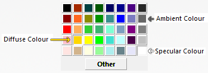 | ||
| If we look now they do look better but they are still very dark, thats because we havent told our world that they are made from shiney gold metal. | ||
| 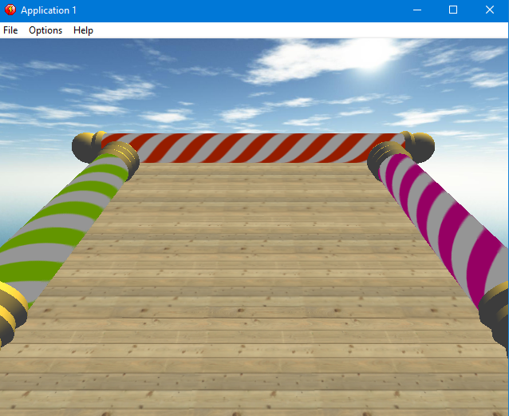 | ||
| Lets create a material in the Material Cache and call it End Poles. It should be Material 4 | ||
| 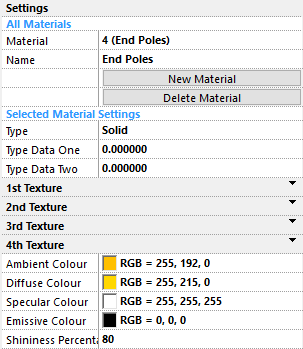 | ||
| We don't need a texture this time as our object is made of metal so we just need our colours, we also need to set Shininess Percentage to 80. | ||
| 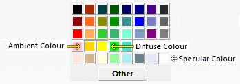 | ||
| In the Event Editor load the material into the 3 different poles using material 4 from the cache and this time into slot 0. | ||
| 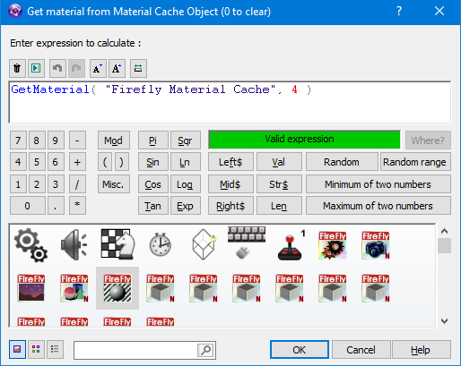 | ||
|
Now yours should look as good as mine, Well done, Is it just me or do those poles look really dull now ??? |
||